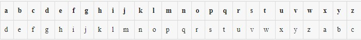
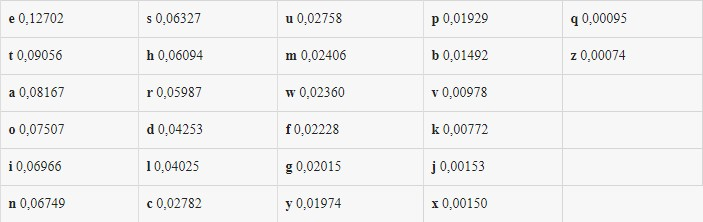
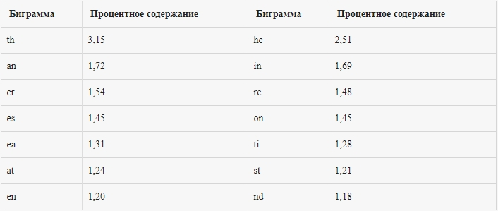
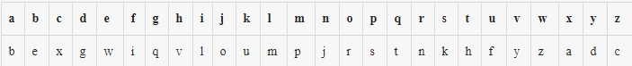

Введение в криптографию и шифрование. Часть первая
Введение
Архаичные шифраторы канули в Лету, чего нельзя сказать об алгоритмах шифрования. Операции сдвига, замены и перестановки до сих пор применяются в современных алгоритмах, однако с существенной поправкой в стойкости. За многие столетия, прошедшие со времен первого применения этих шифров, криптографы научились оценивать количество информации, энтропию и стойкость, однако так было не всегда. Рассмотрим подробнее, как работают самые популярные шифры в истории криптографии и в чем их недостатки.
В современном обществе, где почти каждый человек имеет электронный девайс (а то и не один), где каждую минуту совершаются операции с электронной валютой, пересылаются конфиденциальные email, подписываются электронные документы, криптография нужна как воздух. Нужна пользователям, чтобы защитить свою приватность. Нужна программистам, чтобы обеспечить безопасность проектируемых систем. Нужна хакерам, чтобы при аудите понимать уязвимые места в системах. Нужна админам, чтобы представлять, чем и как лучше защищать корпоративные данные. Мы не могли обойти стороной такую важную тему и начинаем цикл статей, посвященный введению в криптoграфию. Для новичков — самый простой путь познакомиться с криптой, для профи — хороший повод систематизировать свои знания. Шесть уроков, от самого простого к сложному. Вперед!
Термины
Для начала давай определимся с терминологией:
- Криптография — это наука о том, как обеспечить секретность сообщения.
- Криптоанализ — это наука о том, как вскрыть зашифрованное сообщение, не зная ключа.
- Дешифровка — это процeсс получения открытого текста средствами криптоанализа.
- Расшифрование — это процесс получения открытого текста с использованием ключа и алгоритма расшифрования, предусмотренного для данного шифра.
Зачем мне знания о криптографии?
Предположим, криптография очень нужна, но пусть ей займутся дядьки с усами математики. Зачем же мне знания по криптографии?
Если ты обычный пользователь — то как минимум, чтобы обеспечить свою приватность. Сегодня крупным государствам и влиятельным организациям становятся доступны средства тотального надзора за миллионами людей. Поэтому криптография оказывается важнейшим инструментом, обеспечивающим конфиденциальность, доверие, целостность, авторизацию сообщений и электронных платежей. Повсеместное распространение криптографии останется одним из немногих способов защитить пользователя от угроз, нависающих над его конфиденциальной информацией. Зная, как работает тот или иной протокол или шифр, чем он хорош и где его слабые места, ты сможешь оcознанно выбирать инструменты для работы или просто общения в Сети.
Если ты программист или специалист по ИБ, то здесь вообще от криптографии никуда не скрыться. Любой крупный проект требует обеспечения безопасности информации. Неважно, что ты разрабатываешь: контентный сервис, почтовик, мессенджер, соцсеть или просто интернет-магазин, — везде есть критичные данные, которые надо защищать от перехвата или угона БД. Каждая операция должна быть защищена криптографическими протоколами. В этом случае криптография — подходящий инструмент. Если ты еще с ней не столкнулся, будь уверен — это на 100% лишь вопрос времени.
Короче говоря, криптография используется гораздо чаще, чем можно себе представить. Поэтому пора снять завесу тайны с этой науки, познакомиться с наиболее интересными аспектами и использовать ее возможности себе на пользу.
Зачем изучать старые шифры?
В интернете криптографические протоколы используются практически при каждом запросе. Но как же дело обстояло, когда интернета не было и в помине? Не стоит думать, что в те далекие лохматые времена не было криптографии. Первые способы шифрования появились около четырех тысяч лет назад. Конечно, это были самые примитивные и нестойкие шифры, однако и население тогда было малограмотное, так что такие способы могли защитить информацию от любопытных глаз.
Люди всегда нуждались в секретной переписке, поэтому шифрование не стояло на месте. С раскрытием одних шифров придумывали другие, более стойкие. На смену бумажным шифрам пришли шифровальные машины, которым не было равных среди людей. Даже опытному математику не удавалось взломать шифр, рассчитанный на роторной машине. С появлением первых компьютеров требования к защите информации возросли многократно.
Зачем же нам знакомиться с такими древними и нестойкими шифрами, если можно сразу прочитать про DES и RSA — и вуаля, почти специалист? Изучение первых шифров поможет лучше понять, зачем нужна та или иная операция в современном алгоритме шифрования. Например, шифр перестановки, один из первых примитивных алгоритмов, не был забыт, и перестановка — одна из часто встречающихся операций в современном шифровании. Таким образом, чтобы лучше осознать, откуда на самом деле растут ноги у современных алгоритмов, нужно оглянуться на несколько тысяч лет назад.
Исторические шифры и первые шифраторы
Согласно источникам, первые способы шифрования текста появились вместе с зарождением письменности. Способы тайного письма применялись древними цивилизациями Индии, Месопотамии и Египта. В письменах Древней Индии упоминаются способы изменения текста, которые использовали не только правители, но и ремесленники, желающие скрыть секрет мастерства. Истоком криптографии считается использование специальных иероглифов в древнеегипетской письменности около четырех тысячелетий назад.
Первым шифром, зародившимся в древних цивилизациях и актуальным, в некотором роде, и по сей день, можно считать шифр замены. Чуть позже был придуман шифр сдвига, который применялся Юлием Цезарем, почему и был назван в его честь.
Помимо шифров, нельзя не упомянуть о приборах для шифрования, которые разрабатывали древние математики. Например, скитала — первый шифратор, разработанный в Спарте. Представлял собой палку, на которую по всей длине наматывалась лента пергамента. Текст наносился вдоль оси палки, после чего пергамент снимался, и получалось шифрованное сообщение. Ключом служил диаметр палки. Однако такой способ шифрования был абсолютно нестойким — автором взлома стал Аристотель. Он наматывал ленту пергамента на конусообразную палку до тех пор, пока не появлялись отрывки читаемого текста.
Также ярким примером из мира древних шифраторов может стать диск Энея — диск с отверстиями по количеству букв в алфавите. Нитка протягивалась последовательно в те отверстия, которые соответствовали буквам сообщения. Получатель вытаскивал нитку, записывал последовательность букв и читал секретное послание. Однако этот шифратор обладал существенным недостатком — достать нитку и разгадать послание мог кто угодно.
Шифр сдвига
Это один из самых первых типов шифра. Процесс шифрования очень прост. Он заключается в замене каждой буквы исходного сообщения на другую, отстоящую от исходной на заданное количество позиций в алфавите. Это количество позиций называется ключом. При ключе, равном трем, этот метод называется шифром Цезаря. Император использовал его для секретной переписки. Для того чтобы зашифровать сообщение, нужно построить таблицу подстановок:
Как видишь, во втором ряду символы алфавита сдвинуты на три позиции «назад». Чтобы зашифровать сообщение, для каждого символа исходного текста нужно взять соответствующий ему символ из таблицы подстановки.
Пример шифра:
Исходный текст: Hi, Brut! How are you?
Шифрованный текст: Kl, Euxw! Krz duh brx?
Расшифрование:
На этапе расшифрования мы имеем шифрованный текст и ключ, равный трем. Чтобы получить исходный текст, ищем для каждого символа сдвиг на три позиции к началу алфавита. Так, для первого символа K сдвиг три будет означать символ H. Далее посимвольно расшифровываем текст, пока не получаем исходную фразу Hi, Brut! How are you?.
Криптоанализ:
Легче всего такой шифр взломать простым перебором всех возможных значений ключа — их всего 25. Здесь все просто, и останавливаться смысла нет.
Другой вариант — использовать частотный анализ текста. Для каждого языка есть статистическая информация о частоте употребления каждой буквы алфавита и наиболее часто встречающихся сочетаний букв. Для английского, например, среднестатистические частоты употребления букв таковы:
Что касается двухбуквенных сочетаний (биграмм), то можно заметить следующую тенденцию:
Идея в том, что в зашифрованном тексте самой часто встречаемой буквой будет не эталонная e, а что-то другое. Соответственно, нам нужно найти самую часто встречаемую букву в нашем шифре. Это и будет зашифрованная е. А дальше нужно подсчитать ее сдвиг от е в таблице подстановок. Полученное значение и есть наш ключ!
Шифр замены
Основной недостаток шифра сдвига заключается в том, что есть всего 25 возможных значений ключа. Даже Цезарь начал подозревать, что его шифр не самая лучшая идея. Поэтому на смену ему пришел шифр замены. Для того чтобы воспользоваться этим алгоритмом, создается таблица с исходным алфавитом и, непосредственно под ним, тот же алфавит, но с переставленными буквами (или любой другой набор знаков):
Пример шифра:
Действуем аналогично предыдущему шифру. Для каждого символа исходного текста берем соответствующий ему из таблицы подстановки:
Исходный текст: Hi, Brut! How are you?
Шифрованный текст: Vl, Enfh!Vrz bnw drf?
Расшифрование:
При расшифровании заменяем каждый символ шифротекста соответствующим символом из известной нам таблицы подстановки: v => h, l => i и так далее. После чего получаем исходную строку Hi, Brut! How are you?.
Криптоанализ:
Криптоанализ этого шифра также выполняется методом частотного анализа текста. Рассмотрим пример:
MRJGRJ LK HVW XBSLHBM RI QNWBH ENLHBLJ, LHK SRMLHLXBM, WXRJRPLX, BJG XRPPWNXLBM XWJHNW. LH LK RJW RI HVW MBNQWKH XLHLWK LJ HVW ZRNMG BJG HVW MBNQWKH XLHD LJ WFNRSW. LHK SRSFMBHLRJ LK BERFH 8 PLMMLRJ. MRJGRJ LK GLYLGWG LJHR KWYWNBM SBNHK: HVW XLHD, ZWKHPLJKHWN, HVW ZWKH WJG, BJG HVW WBKH WJG. HVW VWBNH RI MRJGRJ LK HVW XLHD, LHK ILJBJXLBM BJG EFKLJWKK XWJHNW. JFPWNRFK EBJUK, RIILXWK, BJG ILNPK BNW KLHFBHWG HVWNW, LJXMFGLJQ HVW EBJU RI WJQMBJG, HVW KHRXU WAXVBJQW, BJG HVW RMG EBLMWD. IWZ SWRSMW MLYW VWNW, EFH RYWN B PLMMLRJ SWRSMW XRPW HR HVW XLHD HR ZRNU. HVWNW BNW KRPW IBPRFK BJXLWJH EFLMGLJQK ZLHVLJ HVW XLHD. SWNVBSK HVW PRKH KHNLULJQ RI HVWP LK HVW KH. SBFM\'K XBHVWGNBM, HVW QNWBHWKH RI WJQMLKV XVFNXVWK. LH ZBK EFLMH LJ HVW 17HV XWJHFND ED KLN XVNLKHRSVWN ZNWJ. HVW HRZWN RI MRJGRJ ZBK IRFJGWG ED OFMLFK XBWKBN BJG LJ 1066 NWEFLMH ED ZLMMLBP HVW XRJTFWNRN. LH ZBK FKWG BK B IRNHNWKK, B NRDBM SBMBXW, BJG B SNLKRJ. JRZ LH LK B PFKWFP.
Частотный анализ букв этого шифра показывает следующее (читай построчно, буквы сортированы по частоте использования):
W — 88, H — 74, L — 67, J — 55, B — 54, K — 52,
R — 51, N — 41, M — 36, V — 35, X — 29, G — 27,
F — 23, P — 16, S — 16, I — 15, Z — 13, E — 13,
D — 11, Q — 10, U — 5, Y — 4, T — 1, O — 1,
A — 1
Вероятно, что W => e, так как это самая часто встречающаяся буква в шифре (смотри таблицу среднестатистических частот использования букв для английского языка в предыдущем шифре).
Дальше пробуем найти наиболее короткое слово, куда входит уже известная нам буква W => e. Видим, что сочетание HVW чаще всего встречается в шифре. Нетрудно догадаться, что, скорее всего, это триграмма the, то есть в тексте мы уже определили три символа. Если посмотреть на промежуточный результат, сомнений не остается:
MRJGRJ LK the XBSLtBM RI QNeBt ENLtBLJ, LtK SRMLtLXBM, eXRJRPLX, BJG XRPPeNXLBM XeJtNe. Lt LK RJe RI the MBNQeKt XLtLeK LJ the ZRNMG BJG the MBNQeKt XLtD LJ eFNRSe. LtK SRSFMBtLRJ LK BERFt 8 PLMMLRJ. MRJGRJ LK GLYLGeG LJtR KeYeNBM SBNtK: the XLtD, ZeKtPLJKteN, the ZeKt eJG, BJG the eBKt eJG. the heBNt RI MRJGRJ LK the XLtD, LtK ILJBJXLBM BJG EFKLJeKK XeJtNe. JFPeNRFK EBJUK, RIILXeK, BJG ILNPK BNe KLtFBteG theNe, LJXMFGLJQ the EBJU RI eJQMBJG, the KtRXU eAXhBJQe, BJG the RMG EBLMeD. IeZ SeRSMe MLYe heNe, EFt RYeN B PLMMLRJ SeRSMe XRPe tR the XLtD tR ZRNU. theNe BNe KRPe IBPRFK BJXLeJt EFLMGLJQK ZLthLJ the XLtD. SeNhBSK the PRKt KtNLULJQ RI theP LK the Kt. SBFM\'K XBtheGNBM, the QNeBteKt RI eJQMLKh XhFNXheK. Lt ZBK EFLMt LJ the 17th XeJtFND ED KLN XhNLKtRSheN ZNeJ. the tRZeN RI MRJGRJ ZBK IRFJGeG ED OFMLFK XBeKBN BJG LJ 1066 NeEFLMt ED ZLMMLBP the XRJTFeNRN. Lt ZBK FKeG BK B IRNtNeKK, B NRDBM SBMBXe, BJG B SNLKRJ. JRZ Lt LK B PFKeFP.
Отлично, уже известны три буквы. Снова ищем наиболее короткие слова с новыми известными нам подстановками. Сочетание it является частоупотребляемым, и, поскольку буква t уже дешифрована (HVW => the), очевидно, что в нашем тексте L => i (LH => it). После этого обращаемся к поиску биграмм is и to, устанавливаем, что K => s, R => o. Затем обращаем внимание на триграммы ~ing и and. Анализ текста показывает, что BJG, скорее всего, шифротекст от and. После замены всех наиболее часто встречающихся символов получаем текст:
Mondon is the XaSitaM oI QNeat ENitain, its SoMitiXaM, eXonoPiX, and XoPPeNXiaM XentNe. it is one oI the MaNQest Xities in the ZoNMd and the MaNQest XitD in eFNoSe. its SoSFMation is aEoFt 8 PiMMion. Mondon is diYided into seYeNaM SaNts: the XitD, ZestPinsteN, the Zest end, and the east end. the heaNt oI Mondon is the XitD, its IinanXiaM and EFsiness XentNe. nFPeNoFs EanUs, oIIiXes, and IiNPs aNe sitFated theNe, inXMFdinQ the EanU oI enQMand, the stoXU eAXhanQe, and the oMd EaiMeD. IeZ SeoSMe MiYe heNe, EFt oYeN a PiMMion SeoSMe XoPe to the XitD to ZoNU. theNe aNe soPe IaPoFs anXient EFiMdinQs Zithin the XitD. SeNhaSs the Post stNiUinQ oI theP is the st. SaFM\'s XathedNaM, the QNeatest oI enQMish XhFNXhes. it Zas EFiMt in the 17th XentFND ED siN XhNistoSheN ZNen. the toZeN oI Mondon Zas IoFnded ED OFMiFs XaesaN and in 1066 NeEFiMt ED ZiMMiaP the XonTFeNoN. it Zas Fsed as a IoNtNess, a NoDaM SaMaXe, and a SNison. noZ it is a PFseFP.
Далее действуя аналогично или просто подбирая буквы по смыслу, находим исходный текст:
London is the capital of Great Britain, its political, economic, and commercial centre. It is one of the largest cities in the world and the largest city in Europe. Its population is about 8 million. London is divided into several parts: the City, Westminster, the West End, and the East End. The heart of London is the City, its financial and business centre. Numerous banks, offices, and firms are situated there, including the Bank of England, the Stock Exchange, and the Old Bailey. Few people live here, but over a million people come to the City to work. There are some famous ancient buildings within the City. Perhaps the most striking of them is the St. Paul's Cathedral, the greatest of English churches. It was built in the 17th century by Sir Christopher Wren. The Tower of London was founded by Julius Caesar and in 1066 rebuilt by William the Conqueror. It was used as a fortress, a royal palace, and a prison. Now it is a museum.
Как видишь, в этом криптоанализе нашим главным инструментом был статистический анализ частот.
Пройти тест по данному курсу